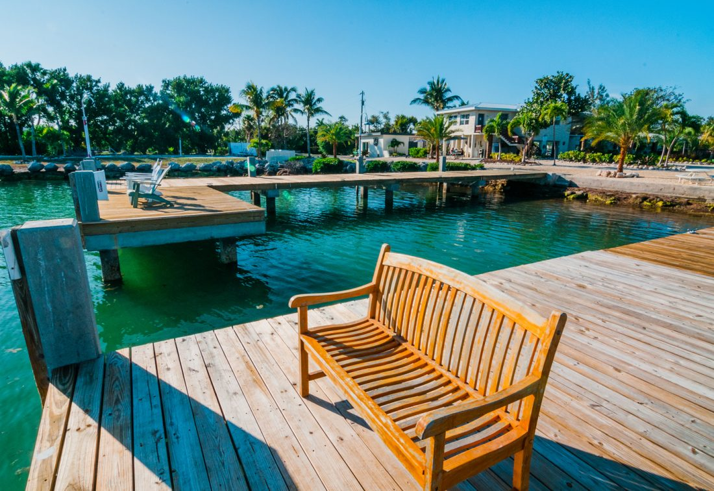
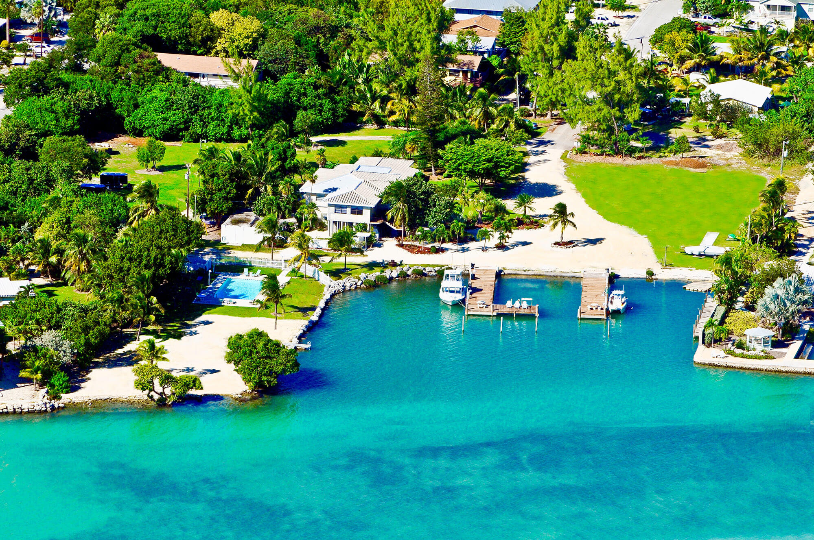

Relaxed between-trip hours
After a morning on the water, Seascape lets guests transition into pool time, outdoor lounging, or a slow dockside break without needing to leave the property.
This is the rare Florida Keys stay where the marina is not off somewhere else. It is right here on the property. Boat parking, fishing pier access, pool time, sunset time, and room convenience all live in one easy waterfront setting.
No loading up the truck and driving back and forth. Stay close to your boat, your gear, the pool, and your room.
Many properties talk about being near the water. Seascape gives you a more useful setup. Your boat, the pier, the pool, and your room all live in the same relaxed footprint. That means less backtracking, less wasted time, and a smoother Keys experience from sunrise through dinner.
For anglers, it feels practical. For couples, it feels scenic. For families, it feels easy. For everyone, it feels like the kind of waterfront stay people hoped they booked in the first place.



The strongest Florida Keys waterfront pages sell a feeling first. Seascape has that feeling and the convenience to back it up. Arrive. Tie up. Cool off at the pool. Freshen up in your room. Head back out for golden hour. That rhythm is the luxury.
This page should not read like a marina spec sheet. It should sell the ease, the scenery, and the usefulness of having your boat life and resort life side by side.
After a morning on the water, Seascape lets guests transition into pool time, outdoor lounging, or a slow dockside break without needing to leave the property.
The pier is not only useful for boaters. It gives the entire property a fishing-and-waterfront identity that feels right for Marathon and the Keys.
Lean into the local Keys appeal. Spend time on the water, come back to regroup, then head out to enjoy a relaxed waterfront dinner and the fresh-catch culture nearby.
This is the kind of waterfront detail people remember. The dock lights. The evening breeze. The fish moving below. The easy walk back to your room. The whole page should keep bringing visitors back to that picture.
A marina page gets stronger when it helps guests imagine the water itself. Around Florida Keys docks, bridges, reefs, and nearshore structure, anglers often think about snapper, jacks, grunts, barracuda, mackerel, and seasonal tarpon movement. It adds color to the stay even for guests who never bring a rod.


Lead with the emotional and practical win. Boat access steps from the room. Fishing pier right there. Pool right there. Room right there. That is the differentiator.
Then support it with the local color. Oceanside setting. Easy route toward world-class fishing. Dock lights in the evening. Water, electric, and ice. A relaxed place to watch the water even when you are not heading out by boat.
Seascape should own the message that few guests want to say out loud but immediately understand when they see it. Having your boat, your room, your pier time, and your pool time all in one easy waterfront setting feels better. It saves effort. It adds atmosphere. It makes the stay more memorable.
Get a real-world look at Seascape Resort & Marina from the street side. This view helps guests picture the entrance experience, nearby marina access, and the easy on-property waterfront layout before check-in.